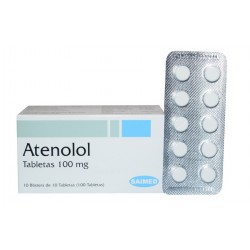

Atenolol
Atenolol ေဆးက ေသြးေပါင္က် ေဆးအမ်ိဳးအစား အမ်ားႀကီးထဲမွ Beta blocker အမ်ိဳးအစားျဖစ္ပါတယ္။ ႏွလံုးနဲ႔ေသြးေၾကာေပၚမွာ အလုပ္လုပ္တဲ့ Epinephrine ကိုတားဆီးၿပီး ေသြးေပါင္က်ေစတဲ့ အာနိသင္ရွိပါတယ္။
ေဆးအသံုးဝင္ပံု
- Atenolol ေဆးကိုတစ္မ်ိဳးတည္း ဒါမွမဟုတ္ တျခားေဆးေတြနဲ႔ တြဲၿပီး ေသြးေပါင္ထိန္းေပးတဲ့ေနရာမွာ အဓိကသံုးပါတယ္။
- ေသြးမတက္ေအာင္ ထိန္းေပးထားလို႔ေသြးတိုး ေရာဂါရဲ႕ေနာက္ဆက္တြဲျဖစ္တဲ့ ေလျဖတ္၊ ႏွလံုး၊ ေက်ာက္ကပ္ ေရာဂါကို ကာကြယ္ေပးပါတယ္။
- ႏွလံုးေရာဂါေၾကာင့္ရင္ဘတ္ေအာင့္ရင္လည္းသံုးလို႔ရပါတယ္။
ေဆးအသံုးျပဳပံု
- တစ္ေန႔ တစ္ ႀကိမ္ကေန ႏွစ္ ႀကိမ္ ေသာက္ရပါတယ္။
- ေဆးကို ပန္းသီး၊ လိေမၼာ္သီးေဖ်ာ္ရည္နဲ႔ တြဲေသာက္ရင္ ေဆးအရွိန္က်ေစလို႔ မေသာက္ရပါ။
- ေသြးဖိအားထိ္န္းႏိုင္ဖို႔ ေဆးကို အၿမဲပံုမွန္ ေသာက္ရပါမယ္။
- ႏွလံုးေရာဂါေၾကာင့္ ရင္ဘတ္ေအာင့္တာ ကာကြယ္ဖို႔ ေဆးပံုမွန္ေသာက္ႏိုင္ေပမယ့္ အရမ္းဆိုးရင္ေတာ့ သိပ္အသံုးမဝင္ပါဘူး။
- ႏွလံုးေၾကာင့္ ရင္ဘတ္ေအာင့္တာေတြမွာ Nitroglycerine လွ်ာေအာက္ငံုေဆးျပားေတြကို ပိုသံုးပါတယ္။
- ေဆးအရွိန္ရၿပီး ေသြးေပါင္ပံုမွန္ထိန္းႏို္င္ဖို႔ ေဆးကို တစ္ပတ္ေလာက္ ပံုမွန္စြဲေသာက္ဖို႔ လိုပါမည္။
- ေဆးေသာက္တာၾကာၿပီး ေသြးေပါင္မထိန္းႏိုင္ရင္ေတာ့ ဆရာဝန္နဲ႔ျပန္တုိင္ပင္ရပါမယ္။
ေဘးထြက္ဆိုးက်ိဳးမ်ား
- ေခါင္းမူး၊ ေခါင္းကိုက္၊ ပ်ိဳ႕အန္ ပင္ပန္းႏြမ္းနယ္တာေတြ ျဖစ္တတ္ပါသည္။
- ေခါင္းမူးတာ သက္သာေစဖို႔ အထိုင္အထကို ျဖည္းျဖည္း လုပ္ေပးရပါမည္။
- ေျခ၊ လက္ကို ေသြးေရာက္ႏႈန္းနည္းေစတဲ့အတြက္ ေျခဖ်ား၊ လက္ဖ်ား ေအးစက္ေနတတ္ပါသည္။
- ေဆးလိပ္ေသာက္ရင္ ေဆးရဲ႕ ေဘးထြက္ဆိုးက်ိဳးပိုမ်ားလို႔ ေဆးလိပ္ျဖတ္ရပါမည္။
- ႏွလုံးခုန္ႏႉန္းေႏွးျခင္း၊ သတိေမ့ျခင္း၊ ေျခသည္းလက္သည္းျပာႏွမ္းေနျခင္း၊ စိတ္ဓာတ္က်ျခင္းမ်ား ျဖစ္ရင္ဆရာဝန္နဲ႔ ေသခ်ာျပသင့္ပါတယ္။
- ေဆးကို ႏွလံုးေရာဂါမွာ သံုးေပမယ့္ တခါတေလ ဆိုးက်ဳိးအေနနဲ႔ ႏွလံုးေရာဂါကို ပိုဆိုးသြားေစတတ္ပါတယ္။
- ေျခေထာက္ေဖာေရာင္ျခင္း၊ အေမာဆို႔ျခင္းမ်ားျဖစ္လွ်င္ နီးစပ္ရာေဆးခန္းကို အျမန္ဆံုးသြားျပပါ။
သတိျပဳရန္အခ်က္မ်ား
- အရင္တုန္းကေဆးမတည့္တာျဖစ္ဖူးရင္၊ ေက်ာက္ကပ္၊ ပန္းနာရင္ၾကပ္၊ နာတာရွည္ေလႁပြန္ေရာင္၊ ေျခလက္ေတြကို ေသြးအေရာက္နည္းေသာ Raynaud’s ေရာဂါ၊ ႏွလံုးေရာဂါမ်ားရွိရင္ ဆရာဝန္နဲ႔ ႀကိဳတင္တိုင္ပင္ေဆြးေႏြးရပါမည္။
- ဆီးခ်ိဳက်သြားရင္ ခံစားရမည့္ လကၡဏာေတြက မသိသာေတာ့တာေၾကာင့္ ဆီးခ်ိဳသမားေတြ အထူးသတိထားဖို႔လိုပါမည္။
- ေဆးေၾကာင့္ ဆီးခ်ိဳထိန္းရခက္ႏိုင္လို႔ ဆရာဝန္နဲ႔ ေသခ်ာတိုင္ပင္ၿပီး ဆီးခ်ိဳေဆးေသာက္ရပါမည္။
- ကိုယ္ဝန္ေဆာင္သည္မ်ား ဒါမွမဟုတ္ ကေလးယူရန္ တိုင္ပင္ေနေသာသူမ်ားလည္း ေဆးမေသာက္ခင္ ဆရာဝန္နဲ႔ အရင္တိုင္ပင္ရပါမည္။
ေဆးအာနိသင္
- ေသြးက်ေဆးနဲ႔ တျခားေဆးမ်ား တြဲေသာက္လွ်င္ ေဆးအာနိသင္ ေျပာင္းအလဲ ရွိႏိုင္ပါသည္။
ေဆးေသာက္မ်ားသြားျခင္း
- ႏွလံုးခုန္အရမ္းေႏွးသြားလွ်င္၊ မူးလွ်င္၊ အေမာဆို႔လွ်င္၊ သတိေမ့လွ်င္ အႏၱရာယ္ရွိေသာေၾကာင့္ ေဆးရံုကိုသြားျပရပါမည္။
- Atenolol ေဆးေသာက္ေနစဥ္ ေသြးေပါင္နဲ႔ ဆီးခ်ိဳကို အျမဲပံုမွန္စစ္ေဆးသင့္ပါသည္ ေလ့က်င့္ခန္းလုပ္ျခင္း၊ အစားထိန္းျခင္း၊ စိတ္ဖိစီးမႉေလွ်ာ့ခ်ျခင္းမ်ားႏွင့္ တြဲလုပ္လွ်င္ ေဆးရဲ႕အာနိသင္အေကာင္းဆံုး ျဖစ္ၿပီး ပံုမွန္ ေသြးထိန္းႏိုင္ပါလိမ့္မည္။
Source– ေဒါက္တာ အိမ့္ခ်ယ္ရီ